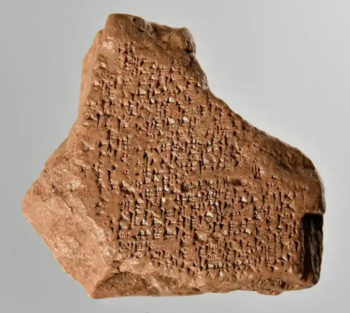
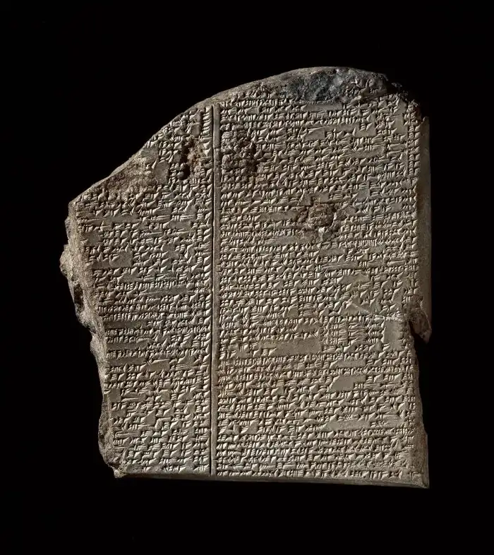

The oldest version we have
In 1872, George Smith of the British Museum read a paper to the Society of Biblical Archaeology on a tablet from Nineveh. It was Tablet XI of the Epic of Gilgamesh, and it contained a flood story so close to Genesis that the room reportedly reacted with astonishment.
Maps, diagrams and images




The Mesopotamian flood tradition survives in several versions:
- Gilgamesh, Tablet XI (Standard Babylonian, first millennium BC, from older material) — Utnapishtim is warned, builds a cube-shaped boat, loads family and animals, and the gods themselves are frightened by the flood.
- Atrahasis (c. 1650 BC) — the flood is a divine response to overpopulation and noise; the hero is Atrahasis.
- Eridu Genesis (Sumerian) — creation, antediluvian life, and flood in one frame.
Scholarship is close to unanimous that there is a literary relationship between these and Genesis. The argument is about the direction and degree of influence. A 2021 literary analysis in Studia Antiqua notes that Genesis shares its three-part structure with Atrahasis and Eridu Genesis, and many of its details with Gilgamesh XI.
And it is not only Mesopotamia
Flood narratives appear in Hindu, Buddhist, Jewish, Islamic, Greek and Chinese traditions and in cultures from Japan to the Americas — usually as a local landscape catastrophe with a moral or cosmic frame. A 2025 review in Evolution: Education and Outreach notes the pattern and the obvious explanation: people live near water, and water destroys settlements.
The Black Sea hypothesis
The most famous attempt to give Noah a date and a place was published by William Ryan and Walter Pitman in 1997. The claim: the Black Sea was a freshwater lake about 110 m below modern level; around 7,500 years ago rising Mediterranean water broke through the Bosphorus and flooded the surrounding lowlands catastrophically, displacing farmers and seeding flood memories across the region.
It was a beautiful hypothesis and it does not survive the evidence. Subsequent coring, seismic survey and fossil work in the Marmara Sea gateway found the opposite: persistent outflow from the Black Sea to the Mediterranean, with the lake level high enough to spill southward across the Bosphorus sill between roughly 12,300 and 9,500 years ago. A 2022 synthesis in Earth-Science Reviews is blunt in its title: the evidence “still contradicts the Noah’s Flood Hypothesis”.
Even the creationist literature notes the collapse — the Black Sea flood “may evaporate completely”, as Creation Ministries put it in 2007, while still rejecting mainstream geology.
The best-supported reading is not one global event but many local ones. Brückner and Engel’s 2019 chapter surveys four candidate scenarios — flooding of the Persian Gulf after the last glacial lowstand, a cosmic impact, the Black Sea refill, and Mesopotamian mega-floods — and argues for the last: repeated catastrophic river floods in the Tigris–Euphrates system that left sediment imprints around ancient tells such as Ur and Uruk.
That would make the biblical flood a memory of something real, local, and recurrent — which is exactly how flood stories are made.
Why a global flood fails
- There is not enough water. All the water in the oceans, ice caps, groundwater and atmosphere combined would raise sea level by roughly 250 feet (about 75 m). Everest is 29,000 feet high. The arithmetic is not close.
- The deposits are not there. A worldwide flood would leave a single widespread layer with mixed terrestrial and marine fossils. The geological column instead shows ordered, repeating sequences with soils, tracks, reefs and burrows in place.
- Flood geologists have tested their own model. The National Center for Science Education published a review by a geologist showing that, using flood geologists’ own correlation schemes, their flood deposits end up confined between two non-flood units within a single geological period — which makes the flood geologically invisible, and therefore untestable.
- The Ark has no site. Decades of expeditions to Ararat have produced wooden fragments of various ages and no structure. The most famous “ark” find, the Durupınar formation, is a natural geological feature.
What the story is really doing
Read as literature rather than geology, Genesis 6–9 is doing something remarkable: it takes a Mesopotamian story in which the gods flood the world because humans are too noisy, and turns it into a story about justice, covenant and a God who regrets. The flood is the same; the theology is inverted. That is a more interesting claim than the water level, and it is the one historians of religion actually argue about.
Sources for this page
- Associates for Biblical Research, “Genesis and Ancient Near Eastern Stories of Creation and Flood” — George Smith, 1872; Gilgamesh XIbiblearchaeology.org
- Studia Antiqua (BYU), “A Literary Analysis of the Flood Story as a Semitic Type-Scene” (PDF)scholarsarchive.byu.edu
- Answers Research Journal, “The Mesopotamian Deluge Accounts” — the tablet inventoryanswersresearchjournal.org
- Earth-Science Reviews (2022), “Persistent Holocene outflow from the Black Sea… still contradicts the Noah’s Flood Hypothesis”sciencedirect.com
- Quaternary International (2007), “Controversy over the great flood hypotheses in the Black Sea”sciencedirect.com
- Brückner & Engel (2019), “Noah’s Flood — Probing an Ancient Narrative Using Geoscience”, Springerlink.springer.com
- Evolution: Education and Outreach (2025), “Noah’s Ark: a saga of science denial” — the water-volume arithmeticlink.springer.com
- NCSE, Senter, “The Defeat of Flood Geology by Flood Geology” (PDF)ncse.ngo
- Creation Ministries, “The Black Sea flood may evaporate completely”creation.com
Open resources on this topic
- PapersOpen-access articles: DOAJ · PubMed Central · Internet Archive Scholar
- BooksPublic-domain and borrowable copies: Open Library · Project Gutenberg · Google Books · Internet Archive
Cite this page
Momin, S. (2026). Noah, Gilgamesh & the Great Flood. The Larger World Archive. https://drsamonline.github.io/LARGE_GLOBE/flood-myths.htmlMomin, Sohil. “Noah, Gilgamesh & the Great Flood.” The Larger World Archive, 2026, https://drsamonline.github.io/LARGE_GLOBE/flood-myths.html.Momin, Sohil. “Noah, Gilgamesh & the Great Flood.” The Larger World Archive, 2026. https://drsamonline.github.io/LARGE_GLOBE/flood-myths.html.@misc{noah2026flood,
author = {Momin, Sohil},
title = {Noah, Gilgamesh & the Great Flood},
year = {2026},
howpublished = {The Larger World Archive},
url = {https://drsamonline.github.io/LARGE_GLOBE/flood-myths.html},
note = {Last reviewed 20 November 2026}
}Last reviewed 20 November 2026 · Corrections policy · this page is not peer reviewed